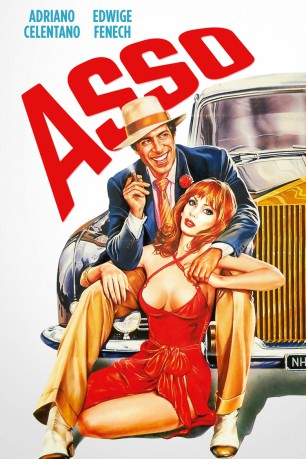

#8017 Asso - ein himmlischer Spieler
 
 IMDB-Wertung: 6.5 / 10
IMDB-Wertung: 6.5 / 10  Metascore: 0
Metascore: 0 
Der gewiefte Zocker Asso vernachlässigt seine schöne Frau zugunsten des Kartenspiels. Eines schönen Morgens jedoch legt ihn ein Mietkiller nach durchspielter Nacht um. Doch Asso verweilt als Geist auf Erden, denn da er seine Frau liebt, will er vor seinem Abgang in Richtung Petrus noch mithelfen, seinen Nachfolger zu finden. So ist seine Frau auch die Einzige, die ihn sehen. Bald schon hat er den scheinbar Richtigen gefunden, doch der findet keinen rechten Anklang bei seiner Gattin. Doch dann gibt ihm der (ebenfalls verstorbene) Killer einen Tip, der ihn zu seinem Mörder führt...
Jahr: 1981
Dauer: 94 Minuten
FSK: 6
Land: Italien Studio: Jugendfilm-VerleihTonspuren:
Untertitel: Deutsch,
Auflösung: 1080p (1808x1080) Größe: 6707 MB
Genre: Komödie
Regisseur: Franco Castellano, Giuseppe Moccia
Drehbuch: Franco Castellano
Soundtrack: Detto Mariano
Darsteller:
- Adriano Celentano als Asso
- Edwige Fenech als Silvia
- Renato Salvatori als Bretella
- Sylva Koscina als Enrichetta Morgan
- Pippo Santonastaso als Luigi Morgan
- Gianni Magni als Sicario
- Memo Dittongo als
- Elisabetta Viviani als Carolina
- Dino Cassio als Commissario
- Sandro Ghiani als Poliziotto
- Raffaele di Sipio als Coreografo
- Gianni Musy als Speaker all'ippodromo
- John Stacy als
- Gerry Bruno als Padrone del ristorante
- Franco Belli als
- Armando Celso als
- Francisco Copello als
- Nunzio Viella als
- Massimo Buscemi als Cliente al bancone del bar (uncredited)
Datei: X:\1981\Asso - ein himmlischer Spieler (1981, FSK6, 1808x1080).mkv seit 16.01.2018
Festplatte: HD 1980-1986
 Es gibt insgesamt 33 Filme in der Gruppe '1981'
Es gibt insgesamt 33 Filme in der Gruppe '1981'